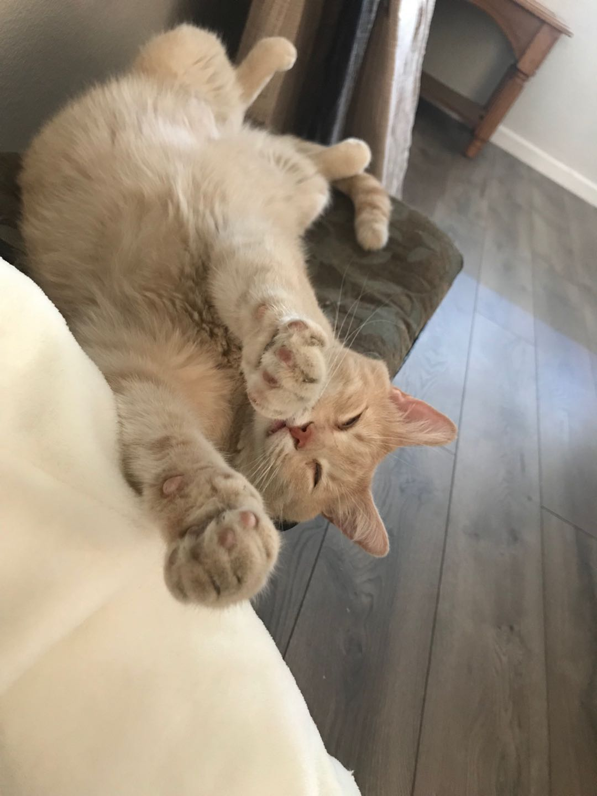
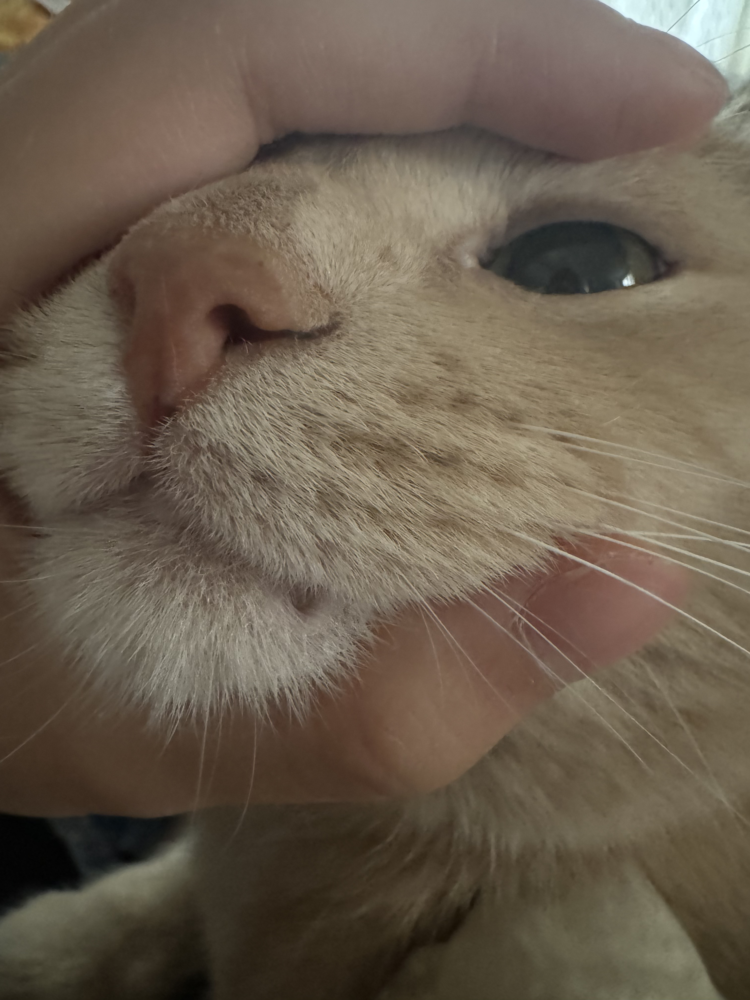
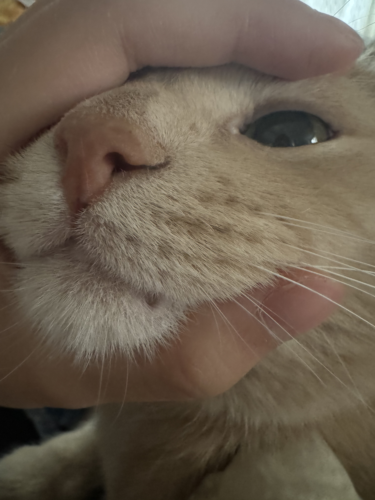
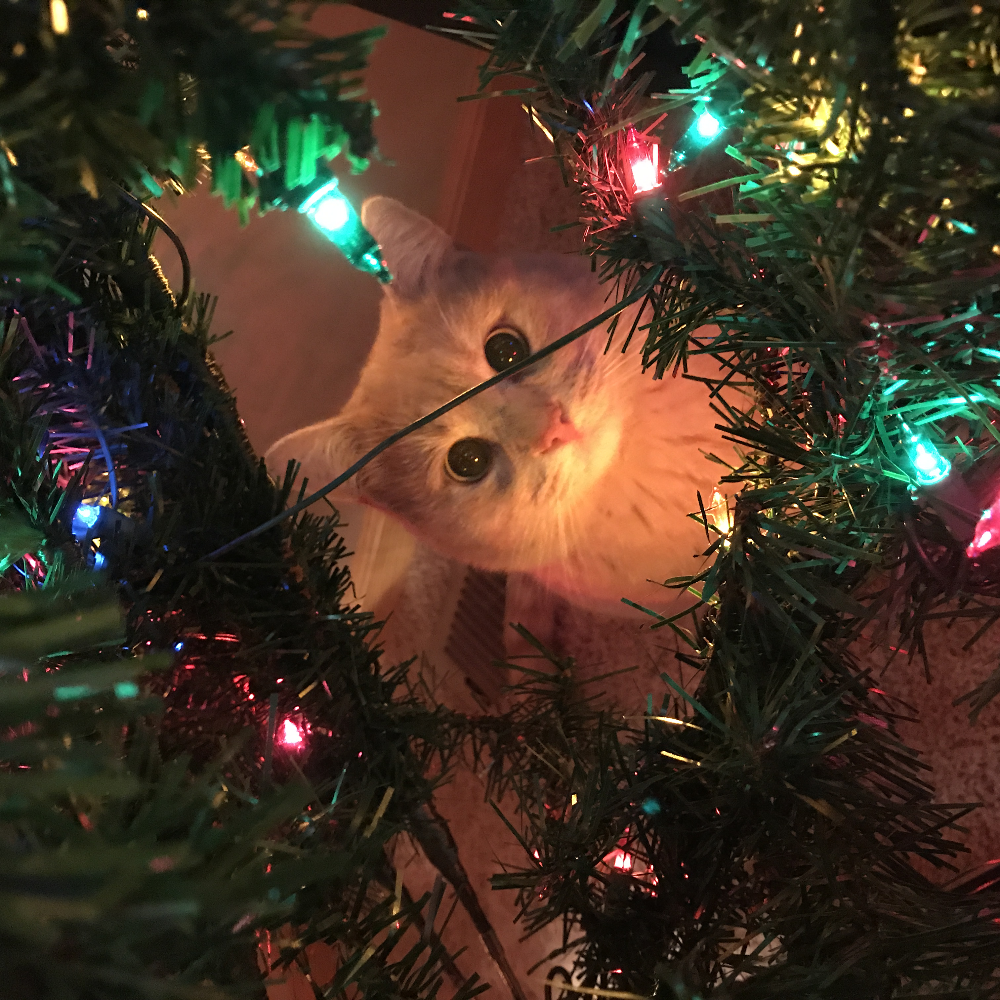

The Many Sides of Xiao Huang The Cat
Sleepy Huang
When Xiao Huang is sleepy (which is almost all the time), he tends to sleep in different areas and in different positions. Sometimes he looks like a superhero with his arms outstretched, and other times he looks like a fried chicken when he is all scrunched up. There is rarely an obstacle to a sleeping surface, and he makes it his goal to push the boundaries of it. If we're not careful, we could find him sleeping on the TV counter or even on top of the car.
Squishy and Scrunchable Huang
One thing that many find surprising is how comfortable Xiang Huang can be around people. Oftentimes, he allows you to hold him and hug him in various formats. Something I like to do is squish him (gently). His face can be held like a hamburger, and it pairs well with the way he sometimes scrunches up while sleeping like a fried chicken. However, you have to be careful, as there are times he gets overstimulated and starts swatting and attacking (oops).
 

Photogenic (And Unphotogenic) Huang
Xiang Huang has a very photogenic side along with its counterpart. When he is photogenic, the person looking at the photo can't help but say "Aww!" When he is not as cooperative, the result is scuffed, yet still adorable. So ultimately, you can't really go wrong with both. Although I think I have more derpy and scuffed photos of him than proper ones.
